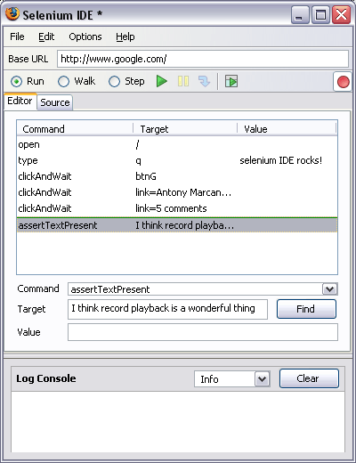

Selenium IDE is an integrated development environment for Selenium tests. It is implemented as a Firefox extension, and allows you to record, edit, and debug tests. Selenium IDE includes the entire Selenium Core, allowing you to easily and quickly record and play back tests in the actual environment that they will run.
Selenium IDE is not only recording tool: it is a complete IDE. You can choose to use its recording capability, or you may edit your scripts by hand. With autocomplete support and the ability to move commands around quickly, Selenium IDE is the ideal environment for creating Selenium tests no matter what style of tests you prefer.
Features:
- Easy record and playback
- Intelligent field selection will use IDs, names, or XPath as needed
- Autocomplete for all common Selenium commands
- Walk through tests
- Debug and set breakpoints
- Save tests as HTML, Ruby scripts, or any other format
- Support for Selenium user-extensions.js file
- Option to automatically assert the title of every page
|

|